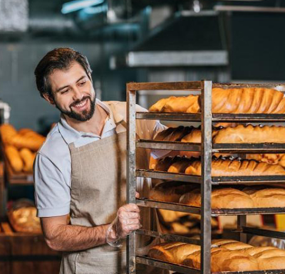

<section class="traditions" id="traditions-section">
  <div class="container">
    <div class="traditions__inner">
      <div class="traditions__content">
        <h2 class="traditions__title">
          Новий формат <br />
          традицій
        </h2>
        <p class="traditions__text">
          <span class="accent-color-light uppercase semi-bold" lang="en">
            shop bakery</span
          >
          — це пекарня, яка взяла все найкраще, і зберегла смак традиційної
          випічки та натуральність інгредієнтів.
        </p>
        <p class="traditions__text text-limited">
          Ми працюємо як найвідоміші мережі —
          <span class="accent-color-light semi-bold"
            >5 хвилин і замовлення готове. </span
          >А ще у наших пекарень стильний дизайн та висока якість
          обслуговування!
        </p>
      </div>
      
    </div>
  </div>
</section>
